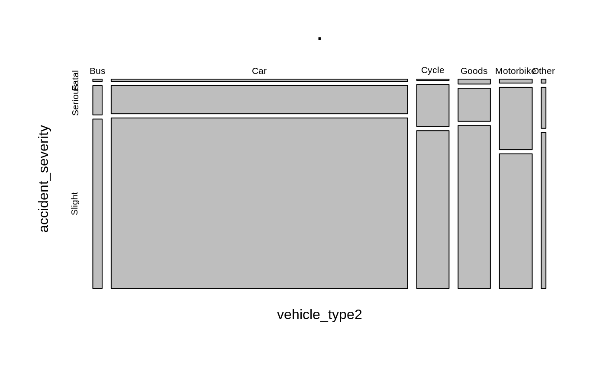

vignettes/stats19-vehicles.Rmd
stats19-vehicles.RmdOf the three dataset types in STATS19, the vehicle tables are perhaps the most revealing yet under-explored. They look like this:
v = get_stats19(year = 2017, type = "vehicles")
#> Files identified: dftRoadSafetyData_Vehicles_2017.zip
#> http://data.dft.gov.uk.s3.amazonaws.com/road-accidents-safety-data/dftRoadSafetyData_Vehicles_2017.zip
#> Attempt downloading from:
#> Data saved at /tmp/RtmpmoWAtw/dftRoadSafetyData_Vehicles_2017/Veh.csv
v
#> # A tibble: 238,926 x 23
#> accident_index vehicle_referen… vehicle_type towing_and_arti…
#> <chr> <int> <chr> <chr>
#> 1 2017010001708 1 Car No tow/articula…
#> 2 2017010001708 2 Motorcycle … No tow/articula…
#> 3 2017010009342 1 Car No tow/articula…
#> 4 2017010009342 2 Car No tow/articula…
#> 5 2017010009344 1 Car No tow/articula…
#> 6 2017010009344 2 Car No tow/articula…
#> 7 2017010009344 3 Car No tow/articula…
#> 8 2017010009348 1 Car No tow/articula…
#> 9 2017010009348 2 Car No tow/articula…
#> 10 2017010009350 1 Car No tow/articula…
#> # … with 238,916 more rows, and 19 more variables:
#> # vehicle_manoeuvre <chr>, vehicle_location_restricted_lane <int>,
#> # junction_location <chr>, skidding_and_overturning <chr>,
#> # hit_object_in_carriageway <int>, vehicle_leaving_carriageway <int>,
#> # hit_object_off_carriageway <int>, first_point_of_impact <chr>,
#> # was_vehicle_left_hand_drive <chr>, journey_purpose_of_driver <chr>,
#> # sex_of_driver <chr>, age_of_driver <int>, age_band_of_driver <int>,
#> # engine_capacity_cc <int>, propulsion_code <chr>, age_of_vehicle <int>,
#> # driver_imd_decile <chr>, driver_home_area_type <int>,
#> # vehicle_imd_decile <int>We will categorise the vehicle types to simplify subsequent results:
v = v %>% mutate(vehicle_type2 = case_when(
grepl(pattern = "motorcycle", vehicle_type, ignore.case = TRUE) ~ "Motorbike",
grepl(pattern = "Car", vehicle_type, ignore.case = TRUE) ~ "Car",
grepl(pattern = "Bus", vehicle_type, ignore.case = TRUE) ~ "Bus",
grepl(pattern = "cycle", vehicle_type, ignore.case = TRUE) ~ "Cycle",
# grepl(pattern = "Van", vehicle_type, ignore.case = TRUE) ~ "Van",
grepl(pattern = "Goods", vehicle_type, ignore.case = TRUE) ~ "Goods",
TRUE ~ "Other"
))
# barplot(table(v$vehicle_type2))All of these variables are of potential interest to road safety researchers. Let’s take a look at summaries of a few of them:
table(v$vehicle_type2)
#>
#> Bus Car Cycle Goods Motorbike Other
#> 5455 173686 18954 18907 19204 2720
summary(v$age_of_driver)
#> Min. 1st Qu. Median Mean 3rd Qu. Max.
#> -1.00 23.00 35.00 35.58 50.00 100.00
summary(v$engine_capacity_cc)
#> Min. 1st Qu. Median Mean 3rd Qu. Max.
#> -1 125 1398 1454 1956 16400
table(v$propulsion_code)
#>
#> Electric Electric diesel Gas
#> 200 74 23
#> Gas/Bi-fuel Heavy oil Hybrid electric
#> 144 80600 3202
#> New fuel technology Petrol Petrol/Gas (LPG)
#> 2 101724 27
summary(v$age_of_vehicle)
#> Min. 1st Qu. Median Mean 3rd Qu. Max.
#> -1.000 -1.000 5.000 5.759 10.000 85.000The output shows vehicle type (a wide range of vehicles are represented), age of driver (with young and elderly drivers often seen as more risky), engine capacity and populsion (related to vehicle type and size) and age of vehicle. In addition to these factors appearing in prior road safety research and debate, they are also things that policy makers can influence, e.g by:
To explore the relationship between vehicles and crash severity, we must first join on the ‘accidents’ table:
a = get_stats19(year = 2017, type = "accidents")
#> Files identified: dftRoadSafetyData_Accidents_2017.zip
#> http://data.dft.gov.uk.s3.amazonaws.com/road-accidents-safety-data/dftRoadSafetyData_Accidents_2017.zip
#> Attempt downloading from:
#> Data saved at /tmp/RtmpmoWAtw/dftRoadSafetyData_Accidents_2017/Acc.csv
#> Reading in:
#> /tmp/RtmpmoWAtw/dftRoadSafetyData_Accidents_2017/Acc.csv
va = dplyr::inner_join(v, a)
#> Joining, by = "accident_index"Now we have additional variables available to us:
Let’s see how crash severity relates to the variables of interest mentioned above:
xtabs(~vehicle_type2 + accident_severity, data = va) %>% prop.table()
#> accident_severity
#> vehicle_type2 Fatal Serious Slight
#> Bus 0.0002553092 0.0033315755 0.0192444523
#> Car 0.0079145844 0.1022324904 0.6167976696
#> Cycle 0.0004896914 0.0165490570 0.0622912534
#> Goods 0.0019294677 0.0130416949 0.0641621255
#> Motorbike 0.0015862652 0.0249365912 0.0538534944
#> Other 0.0002260114 0.0023228950 0.0088353716
xtabs(~vehicle_type2 + accident_severity, data = va) %>% prop.table() %>% plot()